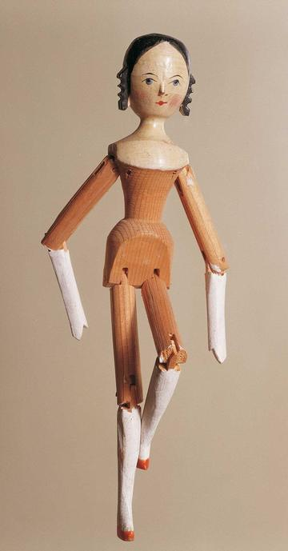

Pacu jawi
Indonesia · RacingPai gow
China · Board and table games

Pakistani truck art
Pakistan +1 · Crafts and makingPlay preview · in the Paper & Paint of the World appPalant
Poland · Street and playground games
Palauan storyboard carving
Palau · Crafts and makingPalauan string figures
Palau · Dexterity and skill games
Pallanguzhi
India · Board and table games
Palm sugar boiling and mould-filling
Cambodia · Crafts and making
Pamiri House Ceiling Raiser
Tajikistan · Crafts and makingPanamanian singing rounds
Panama · Performance and storytellingPancha
Sri Lanka · Board and table games
Pandanus mat plaiting
Kiribati · Crafts and making

Panu di Pinti Weaving
Guinea-Bissau · Crafts and making
Paper Fortune Teller
United Kingdom +3 · Crafts and making
Paper Plane Flight Contest
Japan · Crafts and making
Paper Soccer
Poland +2 · Crafts and making
Paraguayan Harp
Paraguay · Musical instruments
Partner-Carry Obstacle Race
Finland · Racing
Patintero
Philippines · Street and playground games

Payada
Argentina +1 · Wrestling and martial sports
Pebbles
Laos · Dexterity and skill games



Pencak silat
Indonesia +3 · Wrestling and martial sportsPlay preview · in the Sports & Skill of the World app
Penghu Stone Weir Tide Puzzle
Taiwan · Crafts and making

Peranakan beaded slippers
China +1 · Crafts and making
Perfumer's Organ
Worldwide · Crafts and makingPerinola
Venezuela · Dexterity and skill games
Persian Carpet Knotting
Iran +1 · Crafts and makingPlay preview · in the Textile Crafts of the World app
Persian garden layout puzzle
Iran · Crafts and making
Pesapallo
Finland · Racing


Phankhon
Myanmar · Street and playground games

Phoenician Alphabet Trader
Lebanon · Puzzles and mind games
Phuang malai flower garland threading
Thailand · Crafts and making
Phulkari darn-stitch embroidery
India +1 · Crafts and makingPlay preview · in the Textile Crafts of the World appPiko
Philippines · Street and playground gamesPillow fight
Sri Lanka +1 · Street and playground gamesPilolo
Ghana · Street and playground games
Pinata swing
Mexico +1 · Dexterity and skill gamesPlay preview · in the Sports & Skill of the World app


Pirot Kilim Weaver
Serbia · Crafts and makingPitch and toss
Ireland · Dexterity and skill games
Pitthu Garam
Pakistan · Street and playground games

Plis Cap Felter
Albania +1 · Crafts and making
Polder Windmill Keeper
Netherlands · Puzzles and mind games
Pole-and-line tuna fishing from a masdhoni
Maldives · Dexterity and skill gamesPolish draughts
Poland · Board and table games
Pollera and Tembleques
Panama · Crafts and making
Poo
Liberia · Board and table games
Portolan Chart Navigator
Italy +2 · Puzzles and mind games
Portuguese Guitar
Portugal · Musical instrumentsPortuguese staff fighting
Portugal · Street and playground gamesPotta
Barbados · Board and table games
Provencal boules
Monaco · Street and playground games
Pub dominoes
United Kingdom · Board and table games
Puerto Rican Cuatro
Worldwide · Musical instrumentsPuluc
Guatemala +1 · Board and table games
Pupusa Maker
El Salvador · Crafts and makingPutu
Burkina Faso · Street and playground games